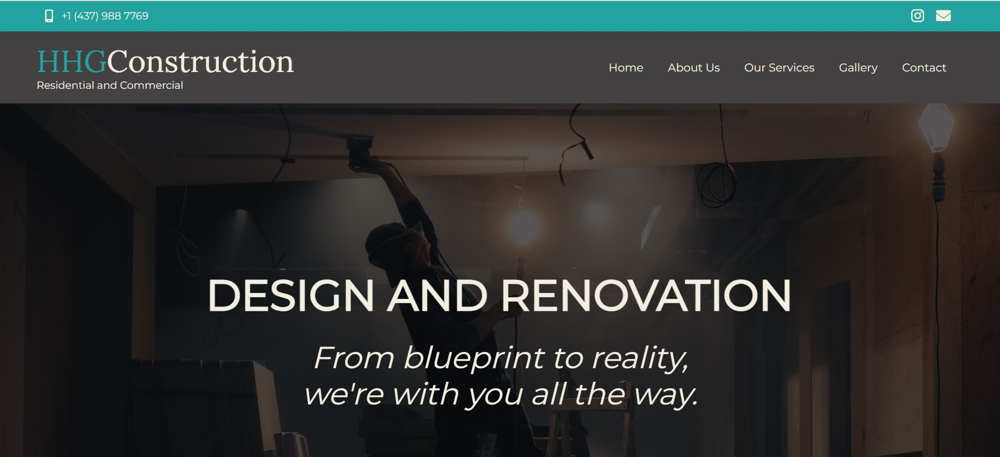

Portfolio

Project 1
This project showcases my skills in HTML, CSS, JavaScript, and Bootstrap. It is a website for a construction company, featuring a modern and responsive design. The layout is built using HTML and styled with CSS, including custom styles and Bootstrap components for enhanced responsiveness and visual appeal. JavaScript is used to add interactivity and dynamic functionality to the website, such as form validation and interactive elements.
Technologies used: HTML, CSS, JavaScript, Bootstrap
View Project